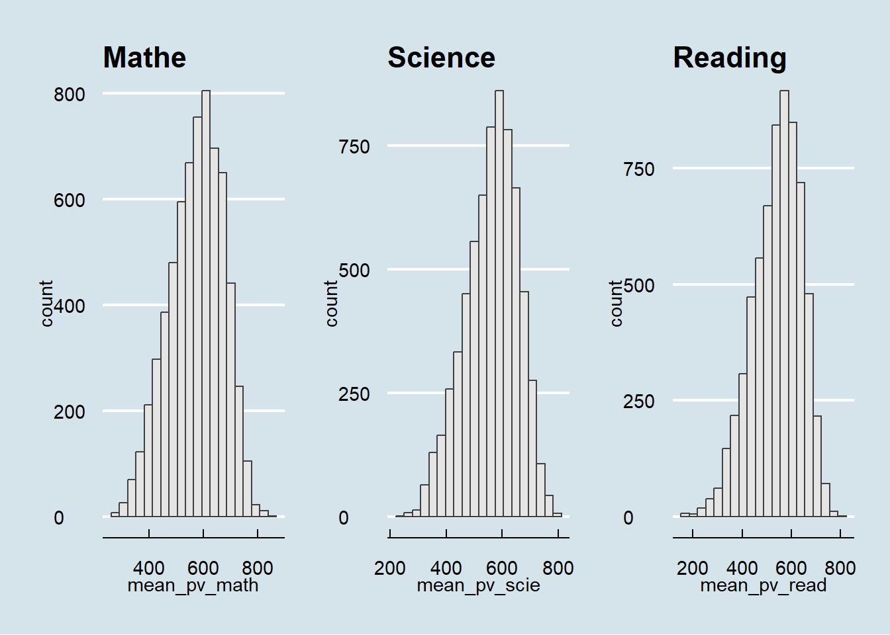

pacman::p_load(tidyverse, ggplot2, ggthemes, gridExtra, ggrepel, patchwork, hrbrthemes)Programme for International Student Assessment Education Survey (Singapore) : Exploratory Data Analysis
panel tabset 做tab
1.0 Project Overview
1.1 Project Brief
This project examines the educational landscape in Singapore, with a focus on disparities among students from diverse backgrounds. Despite international recognition for achieving excellence with minimal differences between children from affluent and disadvantaged families, public perception suggests the existence of disparities. The project aims to investigate disparities between elite and neighborhood schools, students from varying socioeconomic backgrounds, and families with different immigration statuses. Insights gained from this study will contribute to an informed discussion on educational equity in Singapore.
1.2 Project Objectives
The data used for this exercise was released on December 2022 from Programme for International Student Assessment(PISA). The organization survey every three years to observe the education systems worldwide through testing 15 year old students in the subjects of mathematics, reading, and science.
This for this exercise, will be using appropriate Exploratory Data Analysis (EDA)methods from R ggplot2 package to reveal:
Distribution of Singapore students’ performance in mathematics, reading, and science
Relationship between these performances with school, gender, and socioeconomic status of the students.
2.0 Getting Started (Preparation)
2.1 Install & load R packages
Installing necessary R packages that will be needed for this exercise. To load the requried packages the code chunk below use pacman::p_load() function is used to unsure that the packages are load to the current R work environment.
2.2 Importing PISA Data
For this exercise, we are only examining the Singapore students. So the data load in the below code chunk only contains
sg_stu <- readRDS("C:/lzc0313/ISSS608-VAA/In-class_Ex/In-class_ex1/data/stu_qqq_SG.rds")After examine the data using dim(),names(),summary() functions found that most of the variables from the survey is not needed for this exercise, to make it more convinient and efficient, we only extract the variables needed for this exercise as a new table for later use.
# Selecting specific columns from sg_stu
selected_columns <- sg_stu[, c("CNTSCHID", "ST004D01T", "CNTSTUID","ESCS")]
# Calculate the mean for each subject
mean_pv_math <- rowMeans(sg_stu[, c("PV1MATH", "PV2MATH", "PV3MATH", "PV4MATH", "PV5MATH",
"PV6MATH", "PV7MATH", "PV8MATH", "PV9MATH", "PV10MATH")], na.rm = TRUE)
mean_pv_read <- rowMeans(sg_stu[, c("PV1READ", "PV2READ", "PV3READ", "PV4READ", "PV5READ",
"PV6READ", "PV7READ", "PV8READ", "PV9READ", "PV10READ")], na.rm = TRUE)
mean_pv_scie <- rowMeans(sg_stu[, c("PV1SCIE", "PV2SCIE", "PV3SCIE", "PV4SCIE", "PV5SCIE",
"PV6SCIE", "PV7SCIE", "PV8SCIE", "PV9SCIE", "PV10SCIE")], na.rm = TRUE)
# Combine selected columns and new calculations into sg_stu_eda
sg_stu_eda <- cbind(selected_columns, mean_pv_math, mean_pv_read, mean_pv_scie)head(sg_stu_eda,10) CNTSCHID ST004D01T CNTSTUID ESCS mean_pv_math mean_pv_read mean_pv_scie
1 70200052 1 70200001 0.1836 605.2533 667.4296 639.7873
2 70200134 2 70200002 0.8261 689.9528 627.6078 672.0703
3 70200112 2 70200003 -1.0357 676.7768 582.9252 660.0384
4 70200004 2 70200004 -0.9606 401.0528 361.3969 343.6425
5 70200152 1 70200005 0.0856 436.1151 475.6763 479.2390
6 70200043 1 70200006 0.1268 518.1055 431.4652 476.0031
7 70200049 2 70200007 -0.0154 707.9552 704.2219 646.9278
8 70200107 2 70200008 1.1558 620.4136 524.4010 573.1763
9 70200012 1 70200009 1.4654 735.7920 713.1340 691.0124
10 70200061 2 70200010 0.5199 555.4636 504.6734 548.34343.0 Exploratory Data Analysis
3.1 Distribution anaylsis
Before doing any further analysis, it is always good to look at the distribution of the data, so we can look at the distribution of the three subjects using histograms.

h1 <- ggplot(data=sg_stu_eda, aes(x = mean_pv_math)) +
geom_histogram(bins=20, color="grey25", fill="grey90") +
ggtitle("Math")
h2 <- ggplot(data=sg_stu_eda, aes(x = mean_pv_scie)) +
geom_histogram(bins=20, color="grey25", fill="grey90") +
ggtitle("Science ")
h3 <- ggplot(data=sg_stu_eda, aes(x = mean_pv_read)) +
geom_histogram(bins=20, color="grey25", fill="grey90") +
ggtitle("Reading")
patchwork <- h1 + h2 + h3
patchwork <- patchwork + plot_layout(ncol = 3)
patchwork & theme_economist()The analysis of Singapore students’ performance across mathematics, science, and reading reveals a notable strength in mathematics, evidenced by a maximum score of 842.72 that surpasses the top scores in science (801.9) and reading (797.59). The data indicates a wider range of abilities in reading, as seen by the lowest minimum score of 158.5626, compared to mathematics (262.564) and science (242.0194), suggesting that students excel in numerical and scientific reasoning.
3.2 Stacked Density Plot
Examining distributions individually might not provide a clear comparison; however, a stacked density plot could facilitate a more straightforward comparison across the subjects by overlaying their distributions.

ggplot(sg_stu_eda) +
geom_density(aes(x = mean_pv_math, fill = "Mathematics"), alpha = 0.5) +
geom_density(aes(x = mean_pv_read, fill = "Reading"), alpha = 0.5) +
geom_density(aes(x = mean_pv_scie, fill = "Science"), alpha = 0.5) +
ggtitle("Density Plot of Scores by Subject") +
xlab("Scores") +
ylab("Density") +
scale_fill_manual(values = c("Mathematics" = "blue", "Reading" = "red", "Science" = "green"))The stacked density plot gives a more clear view on the performance of these three subjects for Singapore students, we can see that it supports the observations we discovered in section 3.1. Singapore students perform mathematics as the